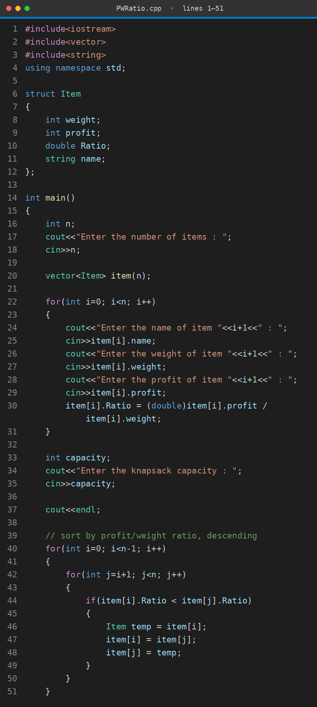
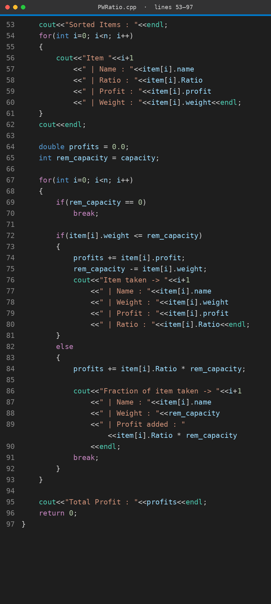

We have items with a value and a weight, and a bag with limited capacity. We want the maximum total value. Items can be broken, so taking a fraction of an item is allowed. The greedy choice: always take the item with the highest value per unit weight first.
Time O(n log n) (sorting) · Space O(n)
